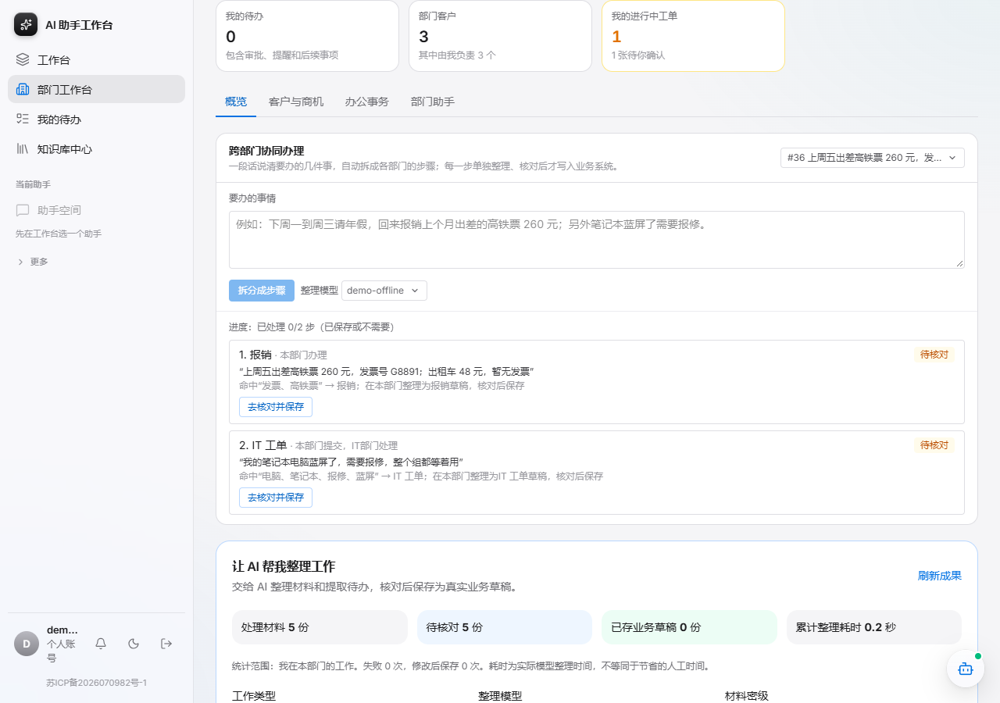
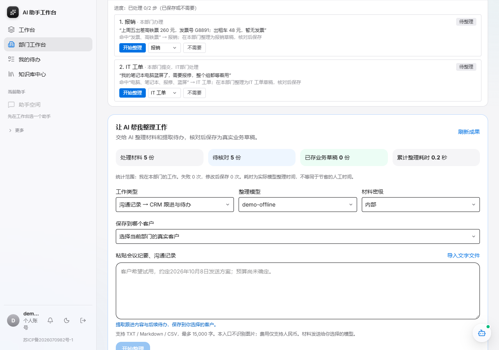
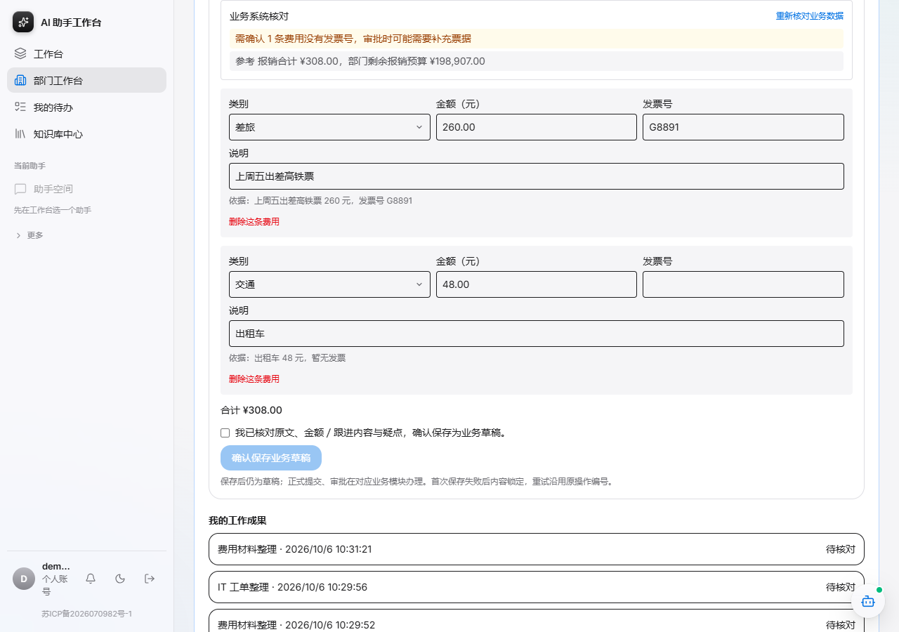
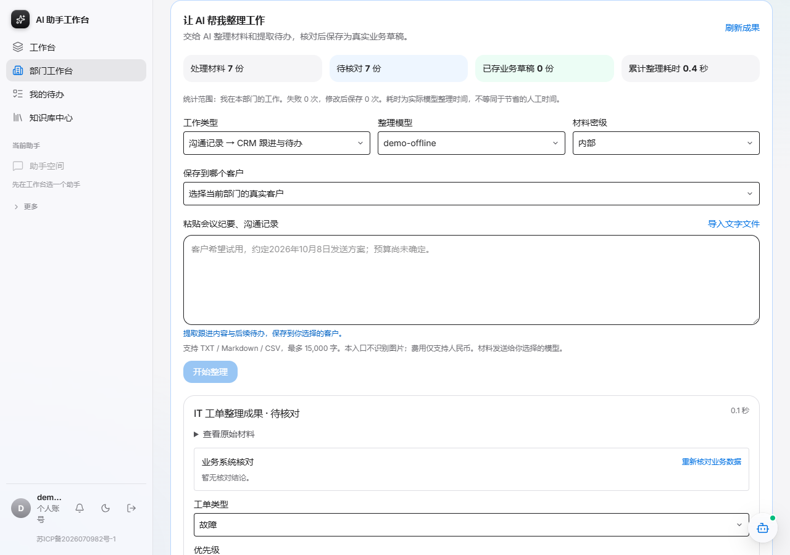
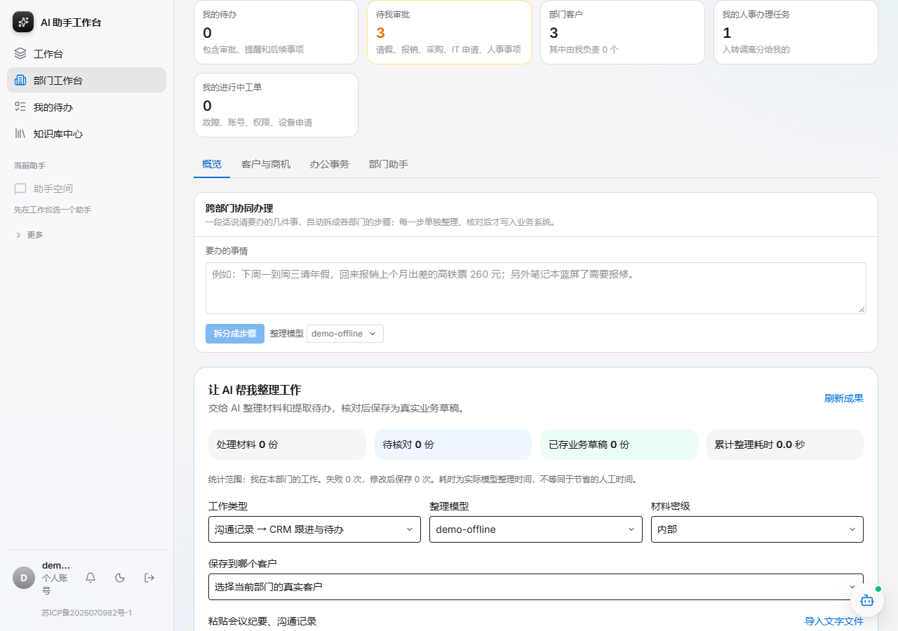
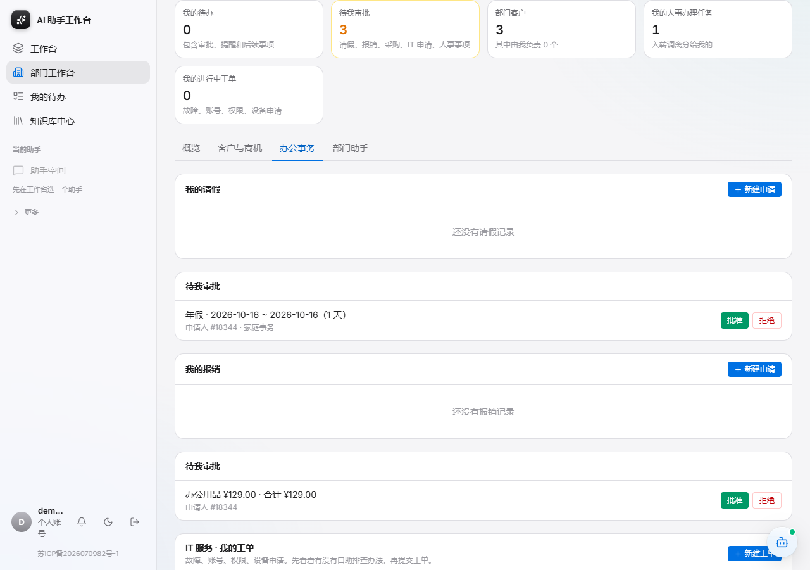
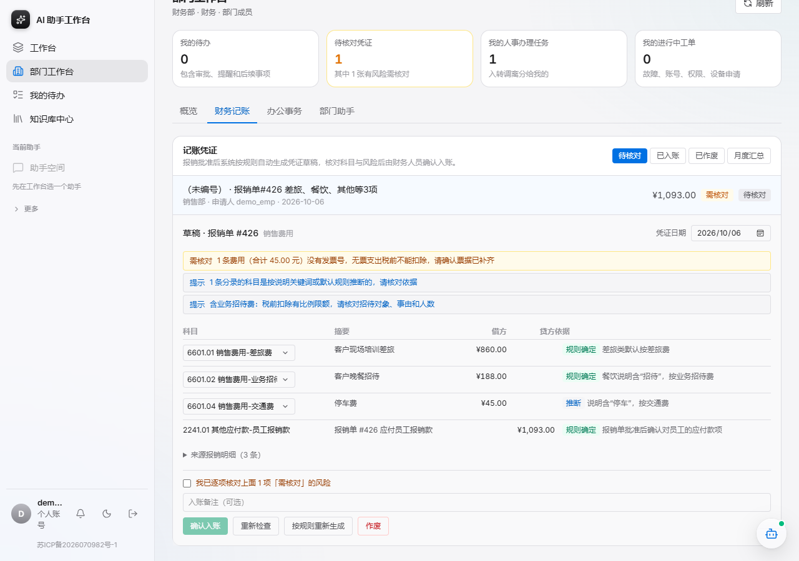
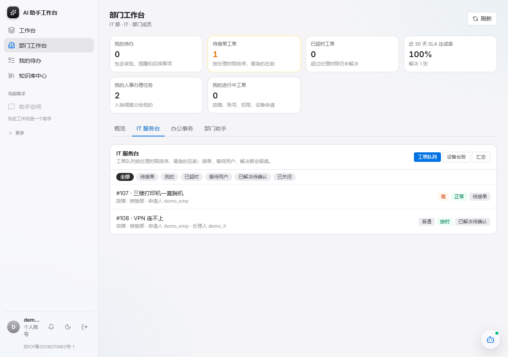
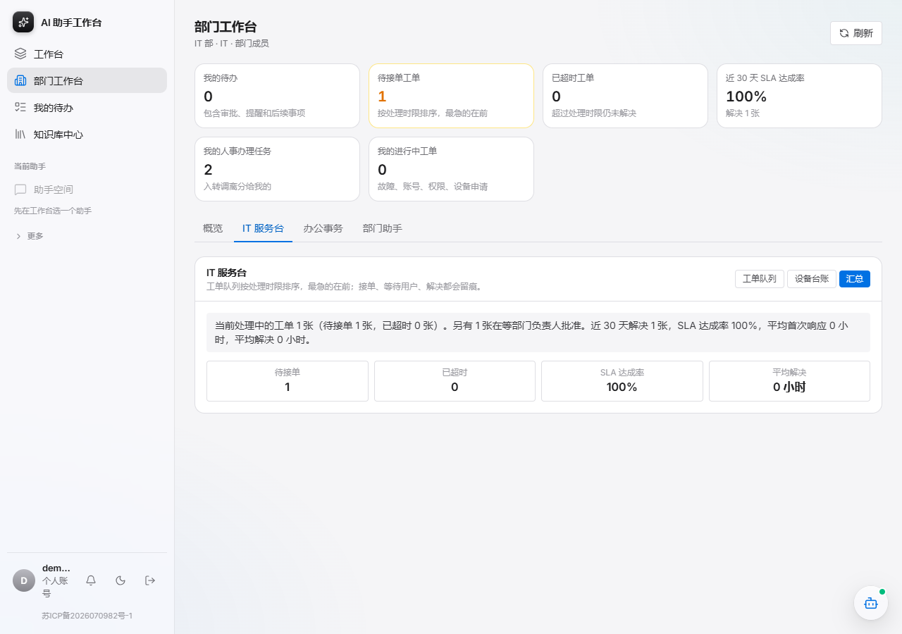
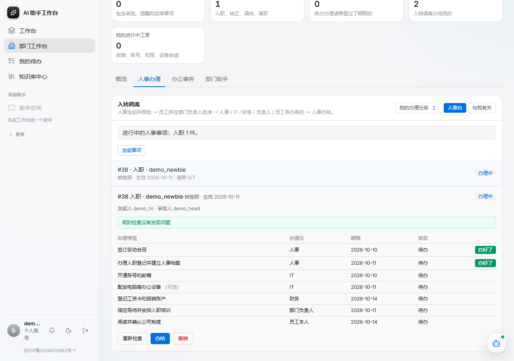

现场环境出问题时，按这个顺序讲。每张图下面是要讲的一句话；账号和密码见 docs/demo-script.md。
概览卡片按部门和身份变化：待办、部门客户、进行中的工单。

每一步写明命中了哪些词、由哪个部门处理；拆错了可以改类型或标为不需要。

金额、发票号都带原文依据；系统读真实预算，提示“1 条费用没有发票号”。保存前必须人工核对。

“整个组都等着用”被识别为影响范围大，建议紧急；核对页还会给出自助排查建议。

请假、报销、IT 申请、人事事项合计在一张卡片里，点击直达。

负责人在这里批准；批准报销会自动生成记账凭证草稿。

每条分录有科目依据和置信度；无票据、大额、业务招待费等风险逐项说明；高风险必须勾选“已核对”才能入账。

待接单、处理中、SLA 状态一目了然；接单、等待用户、解决都会留痕。

SLA 达成率、平均首次响应、解决耗时、处理人负载——可量化的效率证据。

人事、IT、财务、负责人、员工各办各的；必办项全部完成且检查无阻断才能办结。
